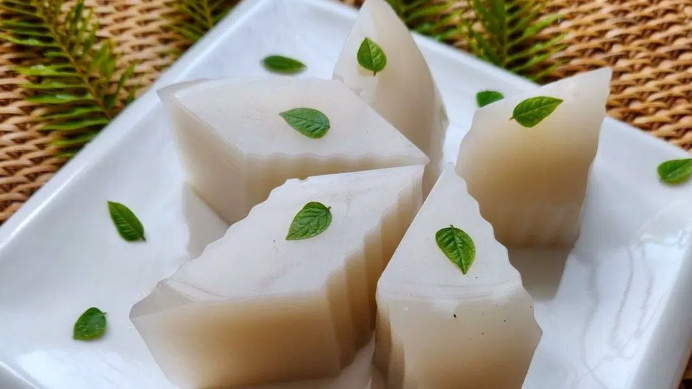
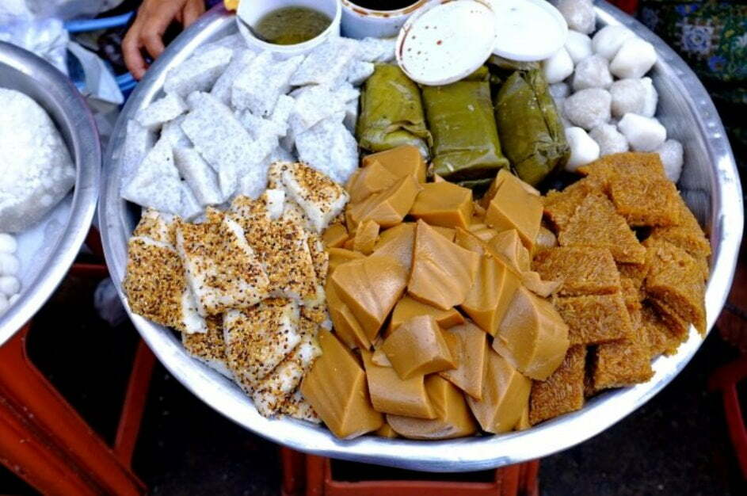
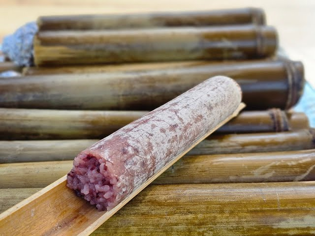

Burmese Snack

Jelly
Burmese jelly, or Kyauk Kyaw, is a popular dessert made from coconut milk, agar-agar, and sugar, creating a sweet, and smooth texture in layered with tasty taste. Enjoy as snack.
View Recipe
Moh-lin-Mayar
Mont Lin Ma Yar is a popular Burmese snack made of small rice flour pancakes, typically filled with ingredients like eggs, pea, sesame, offering a sweet or savory flavor.
View Recipe
Bein Mont
Bein Mont is a traditional Burmese snack made from sticky rice, mixed with jaggery or coconut. It is a popular sweet treat, especially during festivals and occasions in Myanmar.
View Recipe
Mont Kyew The
Mont Kywe The is a popular Burmese snack made from glutinous rice flour, sugar, jaggery and sometimes coconut. It’s a sweet,enjoyed with coffee.
View Recipe
Sticky Rice in Bamboo
That sticky rice is Burmese snack made of glutinous rice, often served in small balls with smokey in flavor with tea, often enjoyed or sell during festivals.
View Recipe
Htoe Mont
Htoe Mont is a Burmese dessert made from glutinous rice, butter, sugar, and nuts. Chewy and rich, it’s enjoyed during festivals and symbolizes prosperity in Myanmar.
View Recipe
Mont Lat Saung
Mont Lat Saung is a Burmese dessert with rice flour jelly in sweetened coconut milk, enhanced by palm sugar syrup. Served chilled, it's a refreshing and popular treat in Myanmar.
View Recipe
Mont Pyar Thalet
Mont Pyar Thalet is a Burmese rice pancake made from fermented rice batter. Soft and slightly sour, it's cooked on a griddle and often enjoyed with jaggery or grated coconut enjoy a snack
View Recipe
Hsi Htamin
Hsi Htamin is a Burmese dish made from glutinous rice, turmeric, and fried onions. Savory and aromatic, it is commonly eaten for breakfast or as a flavorful snack in Myanmar with coffee or tea.
View Recipe
Moh Lone Yaw Paw
Mont Lone Yay Paw is a Burmese dessert made of glutinous rice flour filled with jaggery. Boiled and topped with coconut, it’s traditionally enjoyed during the Thingyan Water Festival.
View Recipe
Kaut Nyinn Paung
Kaut Nyinn Paung is a Burmese dish made from steamed glutinous rice and coconut. Slightly sweet, it’s commonly enjoyed as a breakfast or snack in Myanmar.
View Recipe
Mont Let Kauk
Mont Let Kauk is a popular Burmese snack made from glutinous rice flour dough, deep-fried into balls, and coated with jaggery syrup and sesame seeds for a sweet treat.
View Recipe